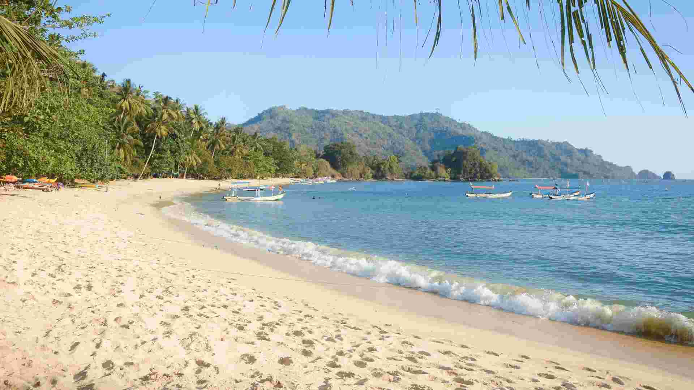
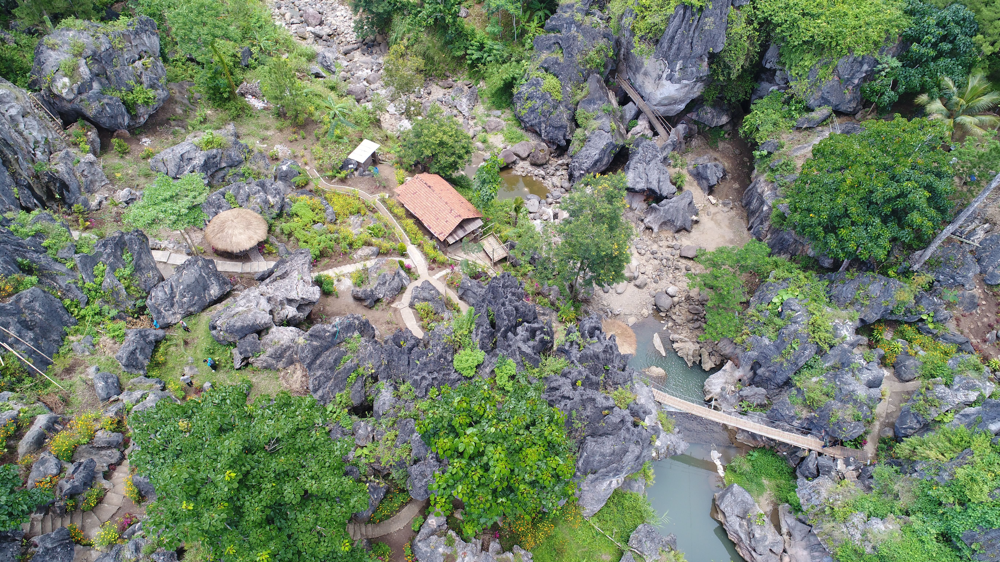

🦇 Goa Lowo
Known as the largest natural bat cave in Southeast Asia, Goa Lowo is a
must-visit for adventurers who want to explore Trenggalek’s mysterious
underground world.

🌊 Pantai Pasir Putih
Famous for its soft white sand and calm waves, this beach is perfect
for a relaxing day while enjoying the beautiful ocean scenery.

🏞️ Ngerit Stone Park
A natural park with stunning stone formations and panoramic views,
ideal for photography and outdoor picnics with friends and family.